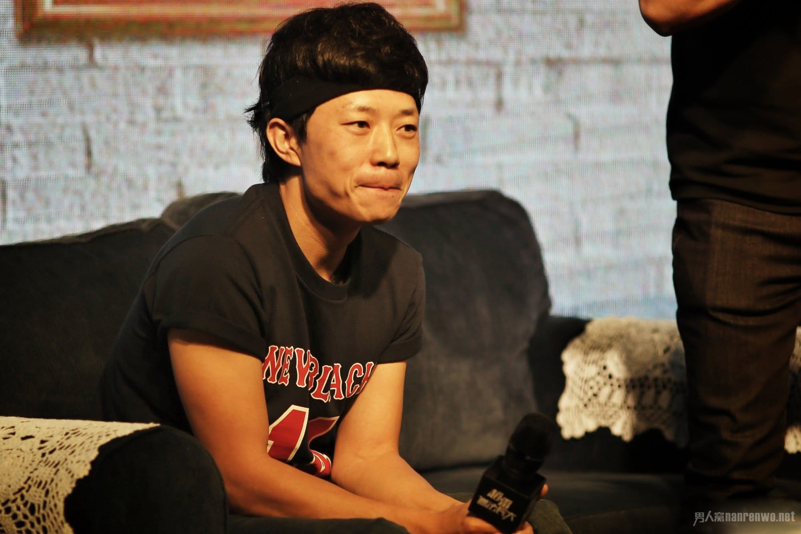
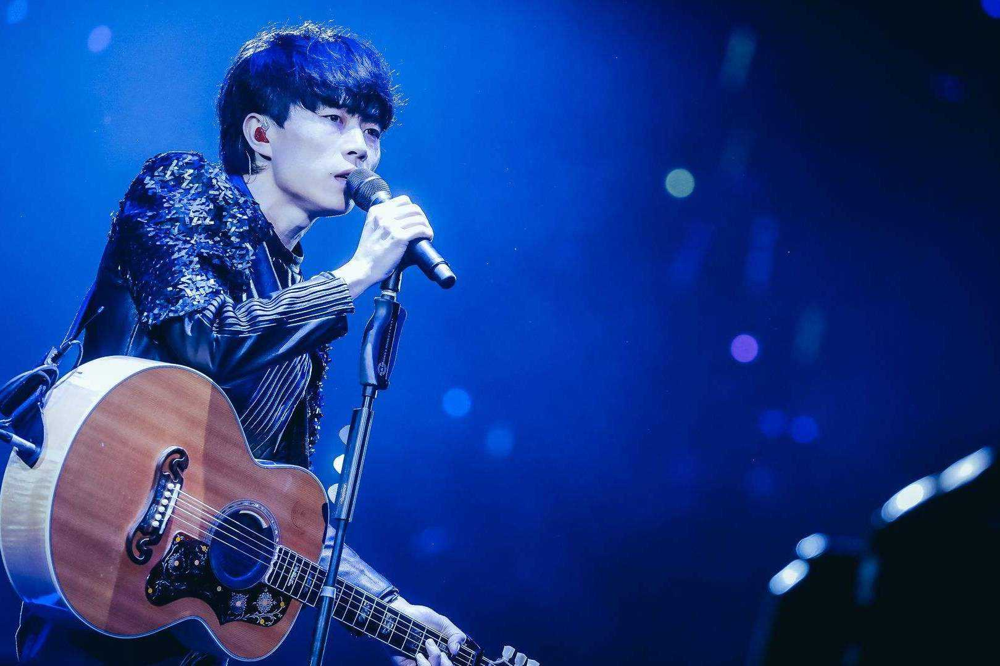
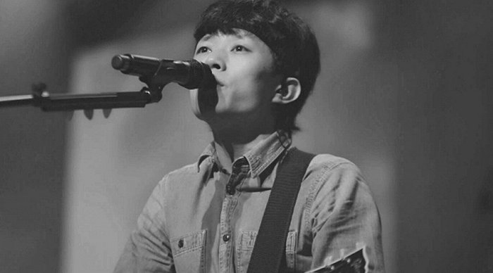

赵雷
赵雷(1986年7月20日—),中国大陆男歌手,出生于北京。早期中国大陆民谣圈内称他雷子。作为土生土长的北京胡同小伙,其作词风格多以白描为主,又不失文艺,作品多以生活为主题。
早年经历
- 高中时期开始接触音乐并学习吉他,期间走过中国大江南北,开始了自己的创作与音乐之路。
- 2003年,17岁的赵雷开始了自己的地下歌手生活,后来他从地下转到酒吧作为驻唱歌手,高中毕业后赵雷放弃了收到的大学录取通知书,继续他的驻唱生活,这些经历都为他日后的创作提供了宝贵的经验。
- 2005年,赵雷开始了他的西藏,云南之行,在这期间,创作了《咬春》《开往北京的火车》等作品,并与民谣歌手大冰成为知己之交。
独立音乐人经历
- 2009年5月,参与了专辑《速写穿乐》的录制,并将其作品《北京的冬天》收录在其中,并随微薄之盐厂牌进行演唱。
- 2010年5月,参加湖南卫视快乐男声长沙赛区海选,并拿到了赛季全球第二张PASS卡,但因其与评委乔小刀关系问题被媒体炒作“作弊”进而被取消比赛资格,之后又转战广州赛区海选,一路凭借自己原创作品进入赛区20强,但最终止步12强。
- 2011年7月,他通过借钱发行了首张个人专辑《赵小雷》,并获得不错反响;同年12月4日,他举办了首场个人专辑发布会。
- 2012年10月-11月,他同其他四位音乐人骑摩托车举办了一次名为“十个轮子上的民谣之路”的全国巡演,这场巡演从成都出发一路向东到深圳,经过15座城市,举办了11场演唱会,共历时30天。
- 2013年,他在中国先后举办了44场全国巡演。
- 2014年,参加《中国好歌曲》演唱原创歌曲《画》被观众熟知,也被导师刘欢选中并誉为“最美歌词”;10月发布第二张个人专辑《吉姆餐厅》。
- 2015年,“年度独立音乐颁奖”他被评为“年度十大音乐人”,专辑《吉姆餐厅》也被评为“年度十大专辑”;9月23日发布个人单曲《再也不会去丽江》;11月15日他在北京开启了13场“我们的时光”全国巡演的第一场,巡演效果获得业内广大关注。
- 2016年,歌手歌手伍佰一起作为嘉宾参加台湾STREETVOICE主办的《大事发声》节目。9月6日召开发布会宣布开启“无法长大”全国巡演;10月24日,发布个人单曲《成都》,一经上线便赢得巨大反响;12月21日,发布第三张个人专辑《无法长大》,收录了一些之前单独发布的单曲。
- 2017年,作为挑战歌手参加湖南卫视《歌手2017》第三期,演唱原创歌曲《成都》并以第2名挑战成功;2月11号《歌手2017》第四期,演唱原创歌曲《理想》取得第7名;2月18号《歌手2017》第五期,演唱民谣歌曲《月亮粑粑》取得第8名综合排名被淘汰。7月20日,首届唱工委音乐盛典（CMIC Music Awards）在北京举办,由赵雷创作词曲并演唱的《成都》获得年度歌曲奖,赵雷个人也获得最佳民谣演唱奖。
- 2017年下半年至2018年赵雷发布四首新歌《家乡》、《静下来》、《十九岁》和作为电影《西虹市首富》的推广曲《彩虹下面》。2019年发布歌曲《小人物》
主要作品
| # | 专辑名称 | 发行时间 |
| 1 | 赵小雷 | 2011年8月7日 |
| 2 | 吉姆餐厅 | 2014年10月19日 |
| 3 | 无法长大 | 2016年12月21日 |
生活照


